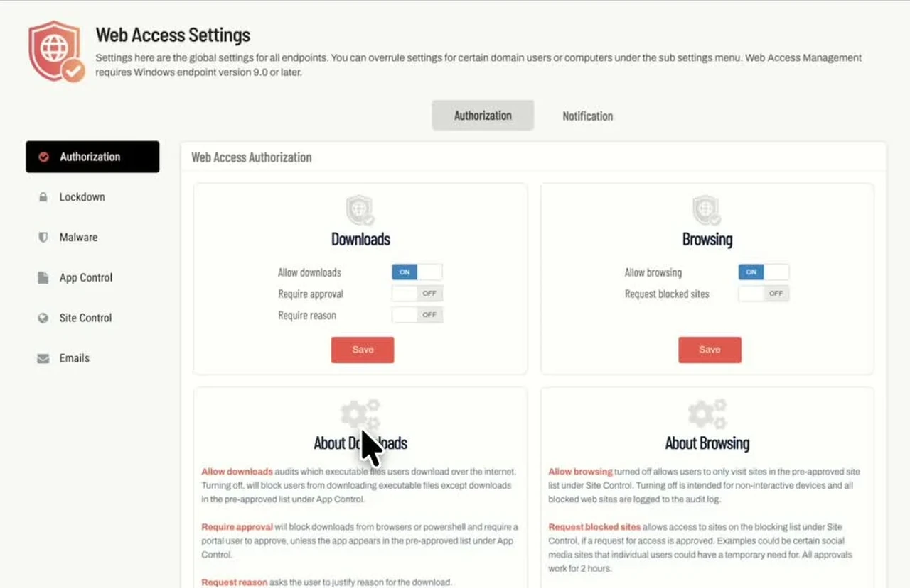
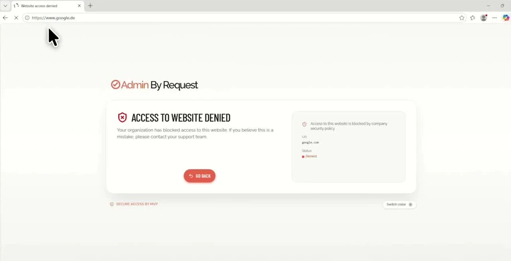
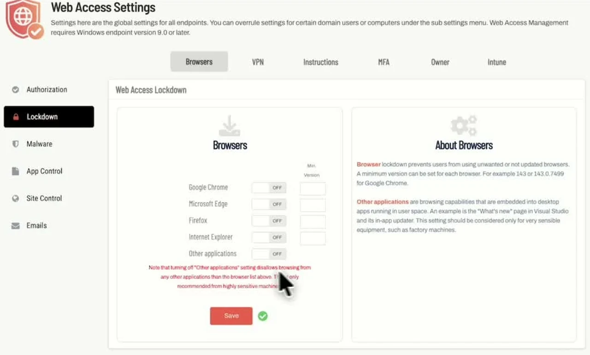

Admin By Request Web Access Management in Practice
In this blog post I explain how to configure Admin By Request Web Access Management. I use a Windows VM to show how you can block downloads, approve requests and restrict access to websites. If you have read my Admin By Request Endpoint Privilege Management walkthrough, you will already know the portal. This time, I look at the browser and download settings.
Advertisement: This video was created in partnership with Admin By Request.
Watch the full video on YouTube (12:19 minutes, in German)
What is Web Access Management
Web Access Management controls which websites users can open and which executable files they can download. You can allow a download, block it or require approval before the user gets access to the file.
Endpoint Privilege Management handles applications that need elevated permissions. Web Access Management covers browsing and downloads. Allowing a download does not automatically allow the installer to run with admin rights.
Both products use the same Windows agent from version 9.0 onwards, so you do not need a second client. Web Access Management has its own activation and license.
Note: Web Access Management currently supports Windows. You can find the platform and agent requirements in the Getting Started guide.
How to get started
The Free Plan includes 25 Web Access Management licenses without a time limit. This gives you a way to try the settings on a few devices.
- Register for the Free Plan or sign in to your existing portal.
- Open Downloads and download the Windows installer for your tenant.
- Install agent version 9.0 or later on a test device. Check that the client connects to the portal.
- Open Web Access Management, then Settings and Web Access Settings.
- Check that your test device is enrolled under Product Enrollment.
On my VM, the client is already installed. For several devices, you can distribute the installer through Microsoft Intune. I do not show that deployment in this video.
Hint: I missed Product Enrollment during my own test. With Test Drive enabled, you have to enroll the device in Web Access Management. You can also disable Test Drive for automatic enrollment. For a small test, I would enroll the intended devices individually.
How to block a download
Open Authorization. In the screenshot, you can see separate settings for Downloads and Browsing. This lets you keep a website accessible while controlling its executable downloads.


I turn off Allow downloads and click Save. On the VM, I open the Greenshot website in Edge and start the download. Admin By Request blocks it.
Then I enable Allow downloads, save and try again. This time, the file passes through the malware check and the client offers Run now.
| Setting | Function |
|---|---|
| Allow downloads | Allows executable downloads. When disabled, matching pre-approved downloads can still be allowed. |
| Require approval | Requires approval unless a matching pre-approval applies. |
| Require reason | Asks the user to explain why the download is needed. |
The settings reference explains how these options work together.
How to approve a download
For the next test, I enable Require approval and Require reason. After saving, I start the Greenshot download again.
- The client opens a request form.
- The user enters a reason and submits the request.
- I open Requests in the portal and approve it.
- Back on the VM, I confirm the approval and continue the download.
For a real request, the reason should describe the task. For example, the user could explain that Greenshot is needed to annotate screenshots for support documentation.
While the checks run, the file stays in a protected location on the endpoint. I call this a sandbox in the video. It does not mean that every file is executed in a separate analysis environment.
How to block a website
Allow browsing controls general web access. If you disable it, users can only open pre-approved websites. To block individual websites, open Site Control and add an entry to the Blocked list.
I add google.de and save. When I open it on the VM, Google still loads. The browser has redirected me to google.com. After adding this domain as well, the request is blocked.


The Google request is blocked after updating the domain rule. Screenshot from the video at 06:55.
Hint: Check the final address in the browser. A redirect can take the user to a different domain from the one you entered in the rule.
You can allow users to request an exception with Request blocked sites. I enable it, open Google again and submit a reason. I approve the request in the portal and confirm it on the client. The website is then available temporarily. The rule stays in place for other users.
How to restrict browsers
Open Lockdown and select Browsers. Here you can allow or block individual browsers and set minimum versions.
I disable the browser permissions and reopen Edge. Access is blocked even though Allow browsing and Allow downloads are still enabled. After allowing Edge again, I can open Bing. Google remains blocked by the website rule.


Browser permissions and minimum versions. Screenshot from the video at 07:55.
There is also a setting for applications with embedded web views. Test this separately if your business applications need it. The Edge test does not show how every application behaves.
Which other controls are available
I also show the other Lockdown options in the video:
- MFA requires authentication before an executable download is released. Email match checks that the identity matches the endpoint user.
- Intune can require a compliant device before allowing an executable download. This needs the Entra ID Connector and an Intune-enrolled device.
- Owner limits executable downloads to the device owner assigned in the inventory.
- VPN removes supported browser VPN extensions. It does not remove full VPN clients.
- Instructions displays your own information before browsing or downloading.
MFA, Intune and Owner apply to executable downloads. General browsing follows the browsing settings. I show these options in the video, but do not test a complete MFA or Intune compliance flow. See the Lockdown documentation for the prerequisites.
Where to check the malware scan
Open the Auditlog and select a download. I open the malware scan details to see the results from the scanning engines. For the file in my test, none reports a detection.
Admin By Request uses OPSWAT MetaDefender. With cloud scanning enabled, unknown files can be uploaded for analysis. Check this setting for internal installers. The product documentation explains the scan process. A clean result does not guarantee that an application is suitable for every task.
Note: The Auditlog is not a complete browsing history. It records executable downloads, blocked website visits and visits to pre-approved websites with logging enabled. Ordinary allowed browsing is not logged.
How to handle repeated requests
Under App Control, you can pre-approve selected downloads. Machine Learning can approve matching requests automatically after the configured number of manual approvals.
AI Approval uses an App Score and a Vendor Score. You set the thresholds in the portal. Machine Learning and AI Approval require Require approval to be enabled. They handle approval; malware detection remains a separate check. You can find the details in the feature breakdown.
Conclusion
You can now try the download and website rules on a Windows test device. Start with a known installer and check each change on the client. If a rule does not apply, check Product Enrollment, the destination domain and any pre-approved rules or Web Access Sub Settings.
Try the Free Plan with 25 licenses on a few devices and see how the approval process works for your users.